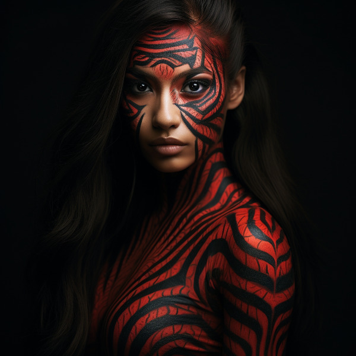
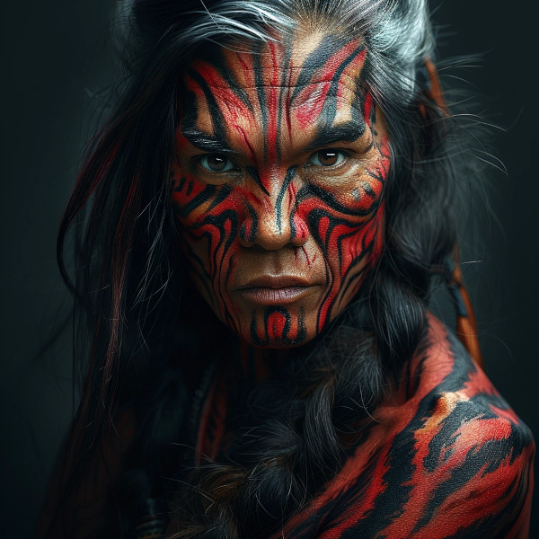

Figure 1: Mochveneba warrior
Mochveneba or “ghost people” are a minority ethnicity within Naurrnen. They are anashim-like, in that they share many of the features that aelven folk have, but they are well known for their physical prowness. Their skin is a deep red, with stripes. Similar to tiger stripes. In fact, legend outside the Mochveneba tribes, say they are crossbred elves with tigers. In reality, they are more than likely half-breeds. More than likely, half-anashim, and half-something else. They have unusual stamina, so some speculate half-orc, though their uncommon beauty seems to indicate otherwise.
The Mochveneba tribes are religious, and perhaps to most of the civilized world, somewhat superstitious. Mochveneba are spiritual and do not generally pursue material wealth. Those that do, are coveted for their beauty and brute strength.

Figure 2: A Mochveneba Chieftain